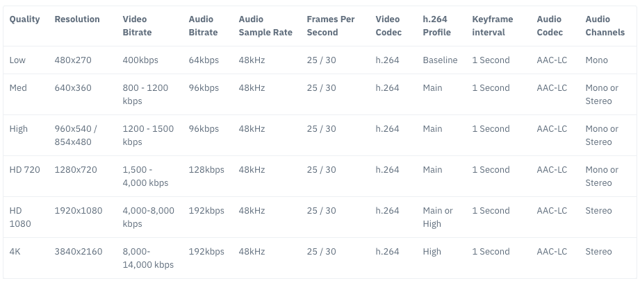

Google REMB
Abstract |
Google REMB |
Authors |
Walter Fan |
Status |
v1.0 |
Updated |
2026-04-21 |
概述
Receiver Estimated Max Bitrate (REMB) 是 Google 提出的一种基于接收端的带宽估计方案。 它通过 RTCP 反馈消息，由接收方告诉发送方它估计的最大可接收比特率。
REMB 的核心思想是：接收端通过观察到达数据包的时间间隔变化（delay gradient），利用统计滤波器估计当前网络路径的可用带宽， 然后将估计结果封装在一个 RTCP PSFB（Payload-Specific Feedback）消息中发送给发送端。 发送端收到 REMB 消息后，应将其发送码率调整到不超过 REMB 中指示的比特率。
REMB 曾经是 WebRTC 中默认的带宽估计方案，但随着 Transport-CC（Transport-wide Congestion Control）的成熟， REMB 已逐渐被取代。不过，理解 REMB 的工作原理对于深入掌握 WebRTC 的拥塞控制机制仍然非常重要。
REMB 定义在 draft-alvestrand-rmcat-remb 中， 该草案虽然从未成为正式 RFC，但在 WebRTC 的早期版本中被广泛实现和使用。
1) What — REMB 是什么？
REMB 是一种 RTCP 反馈消息，属于 PSFB（Payload-Specific Feedback）类型。 根据 RFC4585 中的定义，其 Payload Type 为 206，FMT（Feedback Message Type）为 15， 表示这是一个应用层反馈（Application Layer Feedback）消息。
它描述了接收方对当前 RTP 会话中所有媒体流的总可用带宽的估计值。 该反馈消息用于通知一个在同一 RTP 会话上有多个媒体流的发送方， 在该 RTP 会话的接收方路径上的总的估计可用比特率。
在用于反馈消息的公共数据包头中（如 RFC4585 的 6.1 节所定义）， "数据包发送者的 SSRC" 字段指示通知的来源。 不使用 "媒体源的 SSRC"，并且应将其设置为 0。在其他 RFC 中也使用零值。
媒体发送方对符合此规范的 REMB 消息的接收将导致该消息在 RTP 会话上发送的总比特率等于或低于此消息中的比特率。 新的比特率限制应尽快应用。发送者可以根据自己的限制和估计自由应用其他带宽限制。
REMB 的关键特征
接收端估计（Receiver-side estimation）: 带宽估计的计算在接收端完成
聚合反馈（Aggregated feedback）: 一个 REMB 消息覆盖同一 RTP 会话中的所有媒体流
绝对值反馈（Absolute value feedback）: 直接告知发送端可用的最大比特率
基于延迟梯度（Delay gradient based）: 通过观察包到达时间的变化来推断网络状况
2) Why — 为什么要有 REMB？
发送者不知道接收方的带宽情况，它需要有一个机制由接收方告诉它有多少带宽可供传输， 这样发送方可以根据这个估计的带宽来调整分辨率（90p, 180p, 360p, 720p 等）和帧率（每秒 24, 30, 40, 60 帧等）。
在实时通信中，如果发送端的码率超过了网络路径的可用带宽，就会导致：
丢包（Packet loss）: 路由器缓冲区溢出，数据包被丢弃
延迟增加（Increased delay）: 数据包在路由器缓冲区中排队等待
抖动增大（Increased jitter）: 排队延迟的变化导致包到达时间不均匀
质量下降（Quality degradation）: 丢包和延迟导致音视频质量严重下降
因此，需要一种机制让接收端将其观察到的网络状况反馈给发送端， 使发送端能够自适应地调整编码参数，在可用带宽范围内提供最佳的音视频质量。
{kind=link}

不同分辨率所使用的带宽
3) How — REMB 的实现原理
SDP 协商
在 SDP（Session Description Protocol）中，REMB 的支持通过以下属性声明：
a=rtcp-fb:<payload type> goog-remb
a=extmap:3 http://www.webrtc.org/experiments/rtp-hdrext/abs-send-time
其中：
a=rtcp-fb:<payload type> goog-remb声明该 payload type 支持 REMB 反馈a=extmap:3 ...abs-send-time声明使用 Absolute Send Time 头扩展，这是 REMB 估计所依赖的时间戳信息
如果 SDP Offer/Answer 双方都声明了 goog-remb，则 REMB 机制被启用。
接收端会开始进行带宽估计，并定期发送 REMB 消息给发送端。
REMB 数据包格式
REMB 消息的 RTCP 数据包格式如下：
首先看它的 Payload Type，206 意谓 PSFB 即荷载特定的反馈 Payload-specific Feedback， 参见 RFC5104 Codec Control Feedback 编码层反馈
其次看它的 FMT type，15 意谓应用层反馈 Application layer feedback
然后看它的 Unique Identifier 唯一标识符 "REMB"
最后看相关的 SSRC number，即 RTP 流个数，计算估计出带宽为
mantissa * 2 ^ exp
0 1 2 3
0 1 2 3 4 5 6 7 8 9 0 1 2 3 4 5 6 7 8 9 0 1 2 3 4 5 6 7 8 9 0 1
+-+-+-+-+-+-+-+-+-+-+-+-+-+-+-+-+-+-+-+-+-+-+-+-+-+-+-+-+-+-+-+-+
|V=2|P| FMT=15 | PT=206 | length |
+-+-+-+-+-+-+-+-+-+-+-+-+-+-+-+-+-+-+-+-+-+-+-+-+-+-+-+-+-+-+-+-+
| SSRC of packet sender |
+-+-+-+-+-+-+-+-+-+-+-+-+-+-+-+-+-+-+-+-+-+-+-+-+-+-+-+-+-+-+-+-+
| SSRC of media source (unused) = 0 |
+-+-+-+-+-+-+-+-+-+-+-+-+-+-+-+-+-+-+-+-+-+-+-+-+-+-+-+-+-+-+-+-+
| Unique identifier 'R' 'E' 'M' 'B' |
+-+-+-+-+-+-+-+-+-+-+-+-+-+-+-+-+-+-+-+-+-+-+-+-+-+-+-+-+-+-+-+-+
| Num SSRC | BR Exp | BR Mantissa |
+-+-+-+-+-+-+-+-+-+-+-+-+-+-+-+-+-+-+-+-+-+-+-+-+-+-+-+-+-+-+-+-+
| SSRC feedback 1 |
+-+-+-+-+-+-+-+-+-+-+-+-+-+-+-+-+-+-+-+-+-+-+-+-+-+-+-+-+-+-+-+-+
| SSRC feedback 2 |
+-+-+-+-+-+-+-+-+-+-+-+-+-+-+-+-+-+-+-+-+-+-+-+-+-+-+-+-+-+-+-+-+
| ... |
字段含义详解
版本 Version (V) (2 bits): RTP 当前的版本为 2。
是否填充 Padding (P) (1 bit): 如果设置，表示数据包末尾包含额外的填充字节，这些字节不属于控制信息但包含在长度字段中。通常为 0。
反馈消息类型 Feedback Message Type (FMT) (5 bits): 标识反馈消息的类型。对于 REMB，固定为 15，表示应用层反馈消息。参见 RFC 4585 section 6.4。
荷载类型 Payload Type (PT) (8 bits): RTCP 包类型，标识该包为 RTCP FB 消息。对于 REMB，固定为 PSFB (206)，表示 Payload-specific FB 消息。
长度 Length (16 bits): 这个包的总长度（以 32-bit 字为单位）减 1，包括包头和填充值。
包发送者的 SSRC (SSRC of packet sender) (32 bits): 发送此 RTCP 包的源的同步源标识符。
媒体源的 SSRC (SSRC of media source) (32 bits): 固定为 0，与 RFC5104 section 4.2.2.2 (TMMBN) 中的约定一致。
唯一标识符 Unique Identifier (32 bits): 固定为 'R' 'E' 'M' 'B' (4 个 ASCII 字符)，用于区分 REMB 消息和其他 FMT=15 的消息。
同步源个数 Num SSRC (8 bits): 此消息中包含的 SSRC 数量。
带宽指数 BR Exp (6 bits): 最大总媒体比特率值的尾数的指数缩放因子，忽略所有包开销。值为无符号整数 [0..63]。
带宽尾数 BR Mantissa (18 bits): 最大总媒体比特率的尾数（忽略所有包开销）。
反馈 SSRC (SSRC feedback) (32 bits each): 一个或多个此反馈消息所适用的 SSRC 条目。
最终计算出来的带宽估计为：
比特率编码示例:
假设估计带宽为 1,500,000 bps (1.5 Mbps)：
将 1500000 表示为 mantissa × 2^exp 的形式
1500000 ≈ 5722 × 2^8 (5722 × 256 = 1464832，近似)
或者更精确地：1500000 = 5859 × 2^8 (5859 × 256 = 1499904)
此时 BR Exp = 8, BR Mantissa = 5859
4) 接收端带宽估计算法
REMB 的核心在于接收端的带宽估计算法。该算法基于 Google Congestion Control (GCC) 的接收端部分， 主要包含以下几个关键组件：
到达时间模型（Arrival Time Model）
接收端通过比较相邻数据包组（packet group）的发送时间间隔和到达时间间隔来计算延迟梯度（delay gradient）：
发送时间间隔: dS = S(i) - S(i-1) (通过 abs-send-time 头扩展获取)
到达时间间隔: dR = R(i) - R(i-1) (接收端本地时钟测量)
延迟梯度: dm = dR - dS (单向延迟变化量)
其中：
S(i)是第 i 个包组的发送时间R(i)是第 i 个包组的到达时间dm为正值表示网络排队延迟在增加（可能拥塞），为负值表示排队延迟在减少
在 WebRTC 源码中，这部分由 InterArrival 类实现，它负责：
将到达的 RTP 包按时间戳分组
计算相邻包组之间的发送时间差和到达时间差
输出延迟梯度供后续模块使用
卡尔曼滤波器（Kalman Filter）
原始的延迟梯度信号包含大量噪声，需要通过滤波器进行平滑处理。 REMB 使用自适应卡尔曼滤波器（Adaptive Kalman Filter）来估计网络排队延迟的趋势。
滤波器的状态方程为：
其中 d(i) 是估计的网络排队延迟，w(i) 是过程噪声。
观测方程为：
其中 m(i) 是观测到的延迟梯度，v(i) 是测量噪声。
在 WebRTC 源码中，这部分由 OveruseEstimator 类实现，它维护：
状态估计值（estimated delay）
估计误差协方差（estimation error covariance）
过程噪声协方差（process noise covariance）
测量噪声方差（measurement noise variance），会根据残差自适应调整
过载检测器（Overuse Detector）
过载检测器根据卡尔曼滤波器输出的估计延迟值，判断当前网络处于哪种状态：
Overuse（过载）: 估计延迟持续超过自适应阈值，表示网络拥塞
Underuse（欠载）: 估计延迟持续低于阈值的负值，表示网络有空余容量
Normal（正常）: 估计延迟在阈值范围内
自适应阈值（Adaptive Threshold）是 REMB 算法的一个重要改进。 固定阈值在不同网络条件下表现不佳，自适应阈值会根据网络状况动态调整：
当检测到 Overuse 时: 阈值增大（变得不那么敏感）
当检测到 Underuse 时: 阈值减小（变得更敏感）
正常状态下: 阈值缓慢向默认值回归
在 WebRTC 源码中，这部分由 OveruseDetector 类实现。
速率控制器（Rate Controller）
速率控制器根据过载检测器的输出，使用 AIMD（Additive Increase Multiplicative Decrease）策略调整估计带宽：
状态机:
┌──────────┐ Overuse ┌──────────┐
│ Increase ├─────────────►│ Decrease │
│ (加性增) │ │ (乘性减) │
└────┬─────┘ └────┬─────┘
│ │
│ Normal │ Normal/Underuse
│ │
▼ ▼
┌──────────┐ ┌──────────┐
│ Hold │◄─────────────┤ Hold │
│ (保持) │ Underuse │ (保持) │
└──────────┘ └──────────┘
三种状态的行为：
Increase（增加）: 当网络正常时，逐步增加估计带宽。增加方式为加性增长（Additive Increase），每次增加一个固定量或按比例增加。
Decrease（减少）: 当检测到过载时，快速降低估计带宽。减少方式为乘性减少（Multiplicative Decrease），通常乘以一个小于 1 的因子（如 0.85）。
Hold（保持）: 在状态转换的过渡期间，保持当前估计带宽不变。
在 WebRTC 源码中，这部分由 AimdRateControl 类实现，关键参数包括：
beta_: 乘性减少因子，默认为 0.85time_last_bitrate_change_: 上次码率变化的时间time_last_bitrate_decrease_: 上次码率减少的时间current_bitrate_: 当前估计的比特率
5) WebRTC 源码中的实现
关键类和模块
REMB 的实现涉及 WebRTC 源码中的多个类：
RemoteBitrateEstimator — 接收端带宽估计器的接口类：
class RemoteBitrateEstimator {
public:
virtual ~RemoteBitrateEstimator() {}
// 处理收到的 RTP 包，更新带宽估计
virtual void IncomingPacket(int64_t arrival_time_ms,
size_t payload_size,
const RTPHeader& header) = 0;
// 定期调用，触发带宽估计更新
virtual void Process() = 0;
// 获取当前估计的带宽
virtual bool LatestEstimate(
std::vector<uint32_t>* ssrcs,
uint32_t* bitrate_bps) const = 0;
// 设置最小比特率
virtual void SetMinBitrate(int min_bitrate_bps) = 0;
};
InterArrival — 计算包组间的到达时间差：
class InterArrival {
public:
// timestamp_group_length_ticks: 包组的时间长度
// timestamp_to_ms_coeff: 时间戳到毫秒的转换系数
InterArrival(uint32_t timestamp_group_length_ticks,
double timestamp_to_ms_coeff,
bool enable_burst_grouping);
// 计算延迟梯度
// 返回 true 表示有新的包组完成，可以计算延迟梯度
bool ComputeDeltas(uint32_t timestamp,
int64_t arrival_time_ms,
int64_t system_time_ms,
size_t packet_size,
uint32_t* timestamp_delta,
int64_t* arrival_time_delta_ms,
int* packet_size_delta);
};
OveruseDetector — 过载检测：
class OveruseDetector {
public:
OveruseDetector();
~OveruseDetector();
// 根据估计的延迟偏移量检测网络状态
BandwidthUsage Detect(double offset,
double timestamp_delta,
int num_of_deltas,
int64_t now_ms);
// 获取当前检测状态
BandwidthUsage State() const;
};
// 网络使用状态枚举
enum class BandwidthUsage {
kBwNormal, // 正常
kBwUnderusing, // 欠载
kBwOverusing // 过载
};
AimdRateControl — AIMD 速率控制：
class AimdRateControl {
public:
explicit AimdRateControl(const WebRtcKeyValueConfig* key_value_config);
~AimdRateControl();
// 设置估计的带宽
void SetEstimate(DataRate bitrate, Timestamp at_time);
// 根据网络状态更新带宽估计
DataRate Update(const RateControlInput* input, Timestamp at_time);
// 获取当前估计的比特率
DataRate LatestEstimate() const;
// 获取近期是否有过载
bool TimeToReduceFurther(Timestamp at_time,
DataRate estimated_throughput) const;
};
REMB 消息的编解码
REMB 的实现可以参考 WebRTC 的源码 remb.cc：
编码（发送端构造 REMB 消息）:
// 设置 REMB 消息的比特率和 SSRC 列表
void Remb::SetSsrcs(std::vector<uint32_t> ssrcs) {
ssrcs_ = std::move(ssrcs);
}
void Remb::SetBitrateBps(uint64_t bitrate_bps) {
bitrate_bps_ = bitrate_bps;
}
解码（接收端解析 REMB 消息）:
带宽的计算代码为：
uint8_t exponenta = payload[13] >> 2;
uint64_t mantissa = (static_cast<uint32_t>(payload[13] & 0x03) << 16) |
ByteReader<uint16_t>::ReadBigEndian(&payload[14]);
bitrate_bps_ = (mantissa << exponenta);
解析过程说明：
payload[13]的高 6 位为指数（BR Exp）payload[13]的低 2 位与payload[14..15]组合为 18 位的尾数（BR Mantissa）最终比特率 = mantissa × 2^exp = mantissa << exp
6) REMB vs Transport-CC 对比
REMB 和 Transport-CC 是 WebRTC 中两种不同的拥塞控制反馈机制，它们的核心区别在于带宽估计的计算位置：
特性 |
REMB |
Transport-CC |
|---|---|---|
估计位置 |
接收端（Receiver-side） |
发送端（Sender-side） |
反馈内容 |
估计的最大比特率（绝对值） |
每个包的到达时间（原始数据） |
反馈消息 |
RTCP PSFB (PT=206, FMT=15) |
RTCP RTPFB (PT=205, FMT=15) |
依赖的头扩展 |
abs-send-time |
transport-wide-cc-01/02 |
算法灵活性 |
低（算法固定在接收端） |
高（发送端可自由选择算法） |
算法更新 |
需要更新所有接收端 |
只需更新发送端 |
多流支持 |
一个 REMB 覆盖所有流 |
天然支持 transport-wide 反馈 |
当前状态 |
已弃用（Deprecated） |
默认启用 |
为什么 Transport-CC 取代了 REMB？
算法迭代更方便: Transport-CC 将带宽估计逻辑放在发送端，只需更新发送端软件即可部署新算法，而 REMB 需要同时更新所有接收端。
信息更丰富: Transport-CC 反馈每个包的到达时间，发送端拥有完整的发送和接收信息，可以做出更精确的估计。
更好的多流支持: Transport-CC 使用 transport-wide 序列号，天然支持跨流的拥塞控制。
更灵活的拥塞控制: 发送端可以结合丢包率、RTT、延迟梯度等多种信号进行综合判断。
7) REMB 的局限性与弃用状态
REMB 存在以下局限性：
算法固化: 带宽估计算法固定在接收端，难以快速迭代和优化。
信息损失: 接收端只发送最终的估计结果，发送端无法获取原始的到达时间信息，限制了算法的优化空间。
反馈延迟: REMB 消息的发送频率受 RTCP 带宽限制，可能导致反馈不够及时。
草案状态:
draft-alvestrand-rmcat-remb从未成为正式 RFC，缺乏标准化保障。单一信号: REMB 仅基于延迟梯度进行估计，没有结合丢包等其他信号。
弃用时间线:
2013-2017: REMB 作为 WebRTC 默认的带宽估计方案
2017: Transport-CC 开始作为默认方案
2019+: REMB 在 WebRTC 源码中被标记为 deprecated
目前: 新的 WebRTC 实现默认使用 Transport-CC，REMB 仅作为后备方案
8) 总结
网络状况变化多端，时好时坏，在发送音视频时不能由着性子随便发， 需要根据接收者反馈的 RTCP 消息中包含的最大带宽估计调整自己的发送采样率/分辨率/帧率， 也就是调整发送的码率，以满足基本的通信需求。
REMB 作为 WebRTC 早期的带宽估计方案，其核心思想——基于延迟梯度的拥塞检测——至今仍然是 现代拥塞控制算法（如 GCC 的发送端版本）的基础。理解 REMB 的工作原理， 有助于深入理解 WebRTC 的整个拥塞控制体系。
REMB 工作流程总结:
接收端 发送端
┌─────────────────────────────────┐ ┌──────────────────────┐
│ 1. 接收 RTP 包 │ │ │
│ 2. InterArrival: 计算延迟梯度 │ │ 发送 RTP 媒体数据 │
│ 3. OveruseEstimator: 卡尔曼滤波 │ │ (abs-send-time) │
│ 4. OveruseDetector: 检测过载状态 │ │ ▲ │
│ 5. AimdRateControl: 计算估计带宽 │ │ │ │
│ 6. 构造 REMB RTCP 消息 │ │ 调整编码码率 │
│ │ │ │ ▲ │
│ ▼ │ │ │ │
│ 发送 REMB ──────────────────────────► 解析 REMB │
└─────────────────────────────────┘ └──────────────────────┘